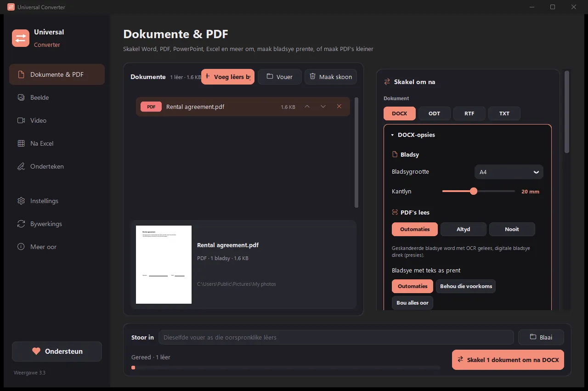

Kombineer verskeie lêers in een PDF
Voeg die dokumente by in die volgorde wat jy wil hê: PDF's, Word- en PowerPoint-lêers, sigblaaie en teks. Universal Converter voeg hulle saam in een PDF. Gebruik die Beelde-oortjie op dieselfde manier om prente te kombineer.
Hoe om te installeer en by te werk
- Maak die afgelaaide .dmg oop en sleep Universal Converter na Applications.
- Maak die program oop. Die eerste keer blokkeer macOS dit omdat dit nie deur Apple onderteken is nie: klik Done.
- Maak System Settings > Privacy & Security oop, blaai af, klik Open Anyway en voer jou wagwoord in. Jy doen dit net een keer.
Bywerkings: as jy dit toelaat wanneer die program die eerste keer oopmaak, kyk dit elke keer as dit begin vir nuwe weergawes, verifieer hul digitale handtekening en installeer hulle wanneer jy kies.
Hoe om te installeer en by te werk
- Tik Laai af vir Android op jou foon.
- Maak die afgelaaide lêer oop. As Android vra, laat jou blaaier of lêerbestuurder toe om programme te installeer.
- Tik Installeer.
Bywerkings: die program kyk omtrent een keer per dag en sê vir jou wanneer 'n nuwe weergawe gereed is. Laai dit op dieselfde manier af en installeer dit oor die oue; jou instellings bly behoue.
Hoe om te installeer en by te werk
- Laai die .AppImage-lêer af.
- Maak dit uitvoerbaar: regskliek, Eienskappe > Toestemmings en laat dit as 'n program loop (of in 'n terminaal: chmod +x Universal-Converter-*.AppImage).
- Dubbelkliek daarop. Niks word geïnstalleer nie: die program is hierdie een lêer.
Opdaterings: as jy dit toelaat wanneer die program die eerste keer oopmaak, soek dit by elke begin na nuwe weergawes, verifieer hul digitale handtekening en vervang die AppImage-lêer waar dit is.
Hoe om dit te doen
- Maak Universal Converter oop en kies Dokumente & PDF aan die linkerkant.
- Sleep jou lêers of 'n hele vouer in die venster, of klik "Voeg lêers by".
- Kies PDF onder "Skakel om na" en skakel "Kombineer in een PDF" aan.
- Klik "Skakel om". Die nuwe lêers word langs die oorspronklikes gestoor, of in die vouer wat jy kies.

Hoekom vanlyn?
Universal Converter doen die werk op jou eie toestel. Jou lêers bly privaat, groot lêers is geen probleem nie, en dit werk sonder 'n internetverbinding.
Meer dinge wat dit kan doen
- Skakel 'n PDF om na Word
- Skakel Word-dokumente om na PDF
- Komprimeer 'n PDF tot 'n grootte wat jy kies
- Komprimeer 'n PDF tot 100 KB, 200 KB of enige grootte vir aanlynvorms
- Skakel PDF-bladsye om na JPG-prente
- Maak 'n geskandeerde dokument 'n wysigbare Word-lêer
- Skakel prente om tussen JPG, PNG, WEBP en meer
- Verander die grootte van prente of verklein hulle tot 'n lêergrootte
- Verander 'n foto of handtekening na 20 KB, 50 KB of presiese pieksels
- Kombineer foto's in een PDF
- JPG na PDF onder 100 KB
- Kopieer die teks uit 'n prent (OCR)
- Pers 'n video saam sonder om dit op te laai
- Skakel video's om tussen MP4, MKV, WebM, MOV en AVI
- Stoor die klank van 'n video as MP3
- Maak 'n GIF van 'n video
- Trek tabelle uit 'n PDF na Excel
- Skakel 'n bankstaat-PDF om na Excel
- Haal tabelle uit PDF-fakture na Excel
- Onderteken 'n PDF
- Vul 'n PDF-vorm in